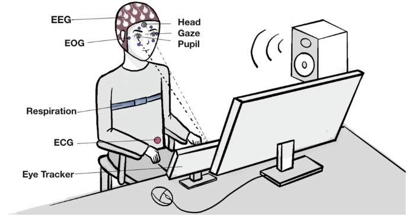
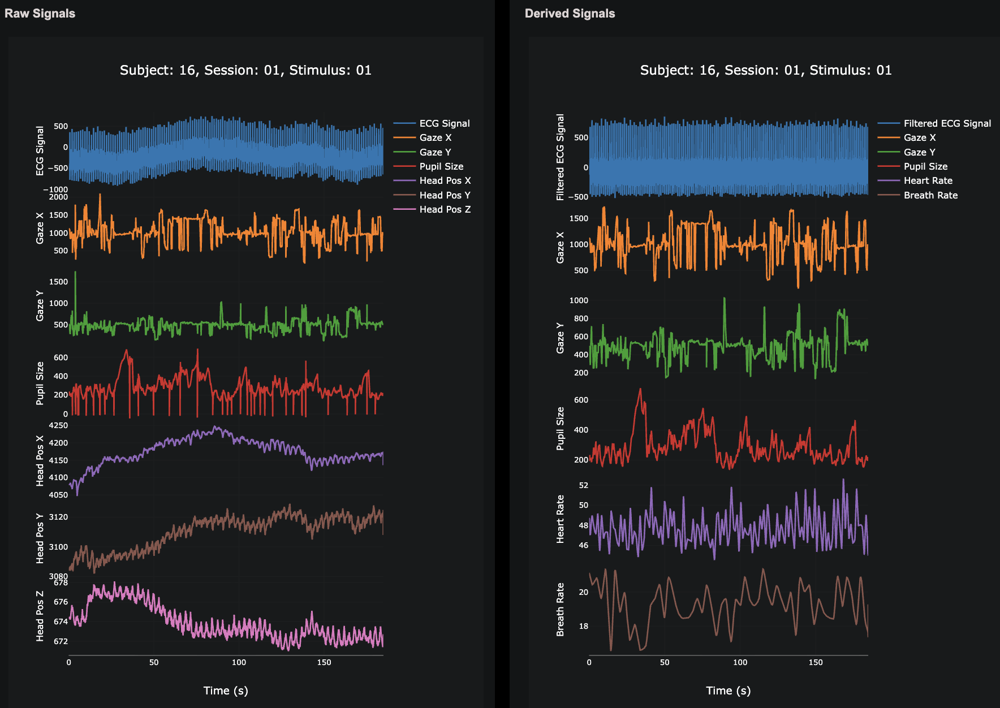

Work
Research, industry, and a few things built for fun.
- Leading an autonomous backend built on Claude Code that automates figure and table generation for Clinical Study Reports (CSRs).
- Engineered custom skill-creators and evaluation frameworks to keep output Statistical-Analysis-Plan compliant.
- Built a LangGraph-based agentic RAG pipeline that cut manual report-building time by ~99%.
- Winner, CDISC AI Innovation Challenge 2026 — Use Case 3.
- Built a generative-AI pipeline over 140,000+ educational videos to detect learning principles from transcripts and embeddings.
- Engineered the BIDS-compliant Brain, Body & Behavior Dataset (ECG, EEG, EOG, respiration, eye-tracking).
- Shipped the dataset as an interactive Flask app — published in Nature Scientific Data.
- Ran a Hidden Markov Measure-Field algorithm across longitudinal lung CT datasets to quantify emphysema.
- Validated results against Bland-Altman analysis.
- Shipped cardiac-based Heart Rate Zone training insights with an MD.
- Built an ECG/cardiac feature dataset across 2,500+ users aimed at predicting cardiac age.
A brain-computer interface that plays a VR game with your brain and nothing else. Motor imagery + SSVEP from EEG, plus EMG, decoded with CSP filtering, SVM and LSTM models into real-time in-game actions. Devpost
Production-grade API estimating heart rate, HRV, respiration rate, and blood pressure from plain webcam video — CHROM & POS algorithms, Welch's PSD, MediaPipe face mesh, and a 32-feature pulse-wave model. Also benchmarked 15 ML models for sclera-based jaundice detection. Voluntary prototype work for WiseAI.
Wavelet-based S1/S2 segmentation and classification of phonocardiogram recordings (0.97 AUC), deployed end-to-end so a phone mic can flag a heart murmur.
Fixed a phase-loss bug in TorchIO to enable full k-space reconstruction, used it to simulate motion artifacts on a motion-free dataset, and trained AFT-Net to correct them. Unpublished — write-up (PDF) · presentation (PDF).
Full list on Google Scholar
Madsen, J., Kuppa, N., & Parra, L. (2026). The Brain, Body, and Behavior Dataset (BBBD): Multimodal Recordings during Educational Videos. Nature Scientific Data. Paper · Dataset site


Kuppa, N., Adler, M., Madsen, J., & Parra, L. C. (in prep). The Attention Trap in Online Education Videos: Multi-study Assessment to Understand Alignment between Instructional Design, Viewership and Learning Outcomes.
Sudhir, K., Kuppa, N., Parra, L. C., & Madsen, J. (in prep). The Attention-Retention Tradeoff: How Accelerating Online Media Shapes Learning.